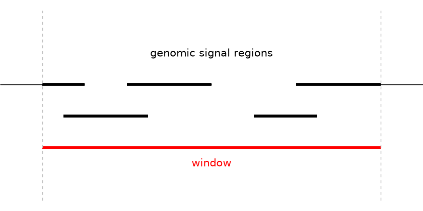
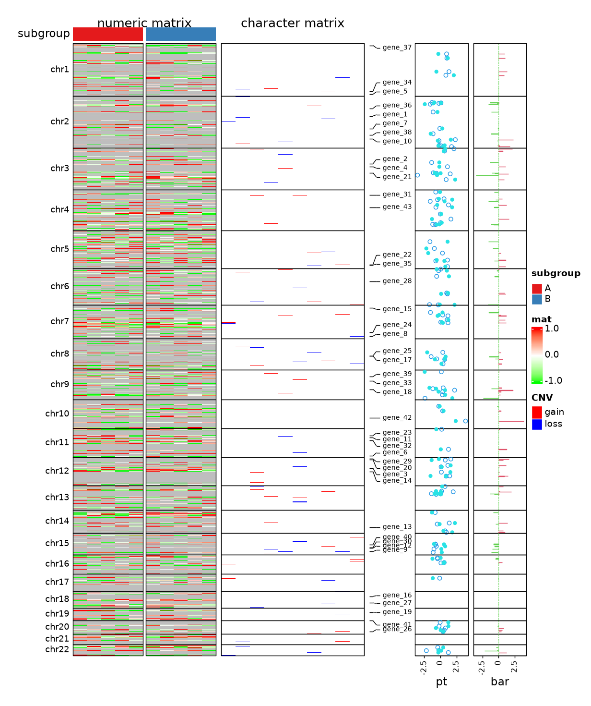
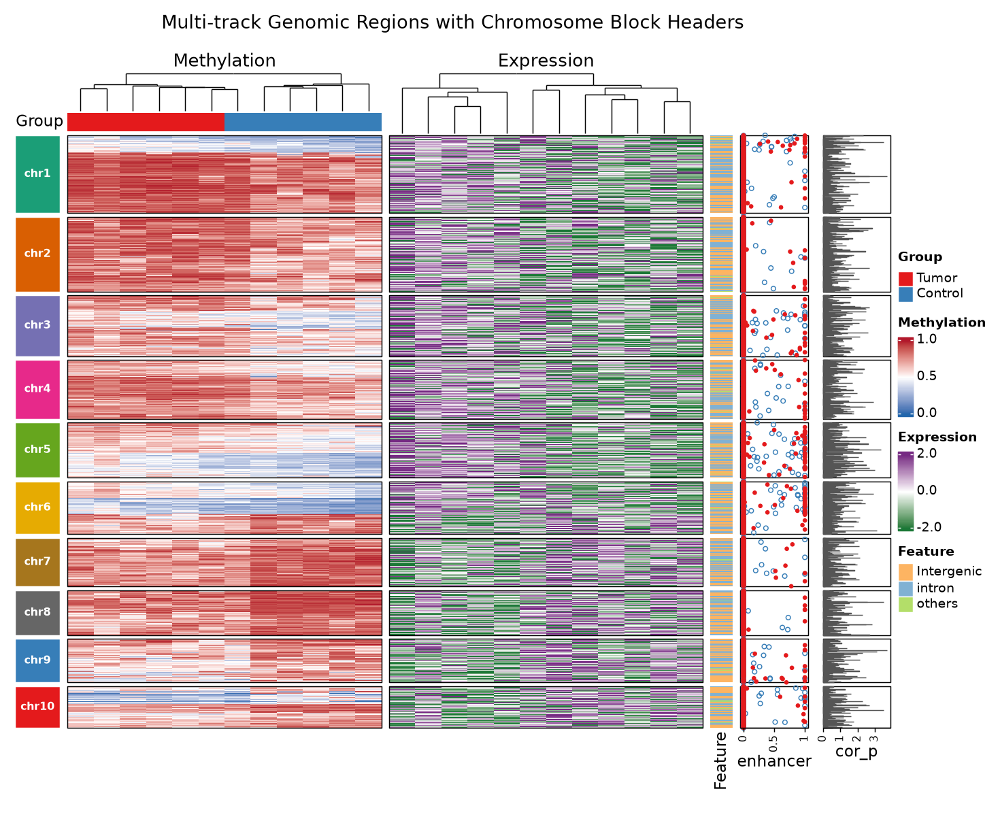

13 Genome-level heatmap#
ComplexHeatmap-py makes it straightforward to build
genome-scale, chromosome-split multi-track heatmaps with lightweight
built-in interval classes (IRanges, GRanges),
genome binning (bin_genome()), and signal summarization
(normalize_genomic_signals_to_bins()).
13.1 Genomic bins and signal normalization#
In a genome-level heatmap, each row (for vertical chromosome layout)
or column (for horizontal chromosome layout) represents a uniform
genomic bin. IRanges and GRanges store
1-based closed genomic intervals
[start, end], and bin_genome() partitions
built-in reference assemblies ("hg19", "hg38",
"mm10", "mm9") into fixed-width windows:
import numpy as np
import pandas as pd
import complexheatmap as ch
chrs = [f"chr{i}" for i in range(1, 23)]
chr_window = ch.bin_genome("hg19", bin_size=1_000_000, chromosomes=chrs)
print(chr_window) # GRanges(n=2897, mcols=[])Next, genomic signal intervals must be aggregated into the
chr_window bins.
normalize_genomic_signals_to_bins() overlaps
chr_window against signal intervals via
findOverlaps() and summarizes overlapping values:

For a given genomic bin of width W + W' where
n signal intervals intersect the window with intersection
widths w_i (W = sum(w_i)) and signal values
x_i, normalize_genomic_signals_to_bins()
provides four numeric method options:
"weighted"(default): width-weighted mean over intersected segments,v_w = sum(x_i * w_i) / sum(w_i)."absolute": unweighted mean over overlapping signal intervals,v_a = sum(x_i) / n."w0": weighted mean blending the intersected signal and uncovered background (0),v_w0 = (v_w * W) / (W + W')."number": count of overlapping signal intervals per bin (n).
For categorical signals (such as copy-number states
"gain" and "loss"), we can pick the category
with the largest total overlap width per bin using
findOverlaps():
def bin_categorical_signals(window: ch.GRanges, gr: ch.GRanges, labels: np.ndarray) -> np.ndarray:
"""Assign each genomic bin the category with largest total overlap width."""
out = np.full(len(window), np.nan, dtype=object)
qh, sh = ch.findOverlaps(window, gr)
if len(qh) == 0:
return out
ov_w = np.minimum(window.end[qh], gr.end[sh]) - np.maximum(window.start[qh], gr.start[sh]) + 1
by_win: dict[int, dict[str, int]] = {}
for q_i, s_i, w_i in zip(qh, sh, ov_w):
if w_i <= 0:
continue
lbl = str(labels[s_i])
bucket = by_win.setdefault(int(q_i), {})
bucket[lbl] = bucket.get(lbl, 0) + int(w_i)
for q_i, bucket in by_win.items():
out[q_i] = max(bucket.items(), key=lambda kv: kv[1])[0]
return out13.2 Horizontal genome-level heatmap#
We generate synthetic genomic signals across four data types using
generateRandomBed(), normalize them onto 1 Mb bins of
hg19, and combine them horizontally:
bed1 = ch.generateRandomBed(nr=1000, nc=10, species="hg19", seed=123)
bed1 = bed1[bed1["chr"].isin(chrs)].reset_index(drop=True)
gr1 = ch.GRanges(
bed1["chr"].tolist(),
ch.IRanges(bed1["start"].to_numpy(), bed1["end"].to_numpy()),
**{c: bed1[c].to_numpy() for c in bed1.columns[3:]},
)
num_mat = ch.normalize_genomic_signals_to_bins(
gr1, value_column=list(bed1.columns[3:]), bins=chr_window, method="weighted", empty_value=np.nan
).mcols.to_numpy(dtype=float)
rng = np.random.default_rng(42)
char_cols = []
for j in range(10):
bed_c = ch.generateRandomBed(nr=1000, nc=0, species="hg19", seed=100 + j)
bed_c = bed_c[bed_c["chr"].isin(chrs)].sample(n=20, random_state=100 + j).reset_index(drop=True)
cnv_vals = rng.choice(["gain", "loss"], size=len(bed_c))
gr_c = ch.GRanges(bed_c["chr"].tolist(), ch.IRanges(bed_c["start"].to_numpy(), bed_c["end"].to_numpy()))
char_cols.append(bin_categorical_signals(chr_window, gr_c, cnv_vals))
char_mat = np.column_stack(char_cols)
bed2 = ch.generateRandomBed(nr=120, nc=2, species="hg19", seed=456)
bed2 = bed2[bed2["chr"].isin(chrs)].reset_index(drop=True)
gr2 = ch.GRanges(
bed2["chr"].tolist(),
ch.IRanges(bed2["start"].to_numpy(), bed2["end"].to_numpy()),
v1=bed2["value1"].to_numpy(),
v2=bed2["value2"].to_numpy(),
)
v_mat = ch.normalize_genomic_signals_to_bins(
gr2, ["v1", "v2"], bins=chr_window, method="weighted", empty_value=np.nan
).mcols.to_numpy(dtype=float)
bed3 = ch.generateRandomBed(nr=45, nc=0, species="hg19", seed=789)
bed3 = bed3[bed3["chr"].isin(chrs)].reset_index(drop=True)
gr3 = ch.GRanges(
bed3["chr"].tolist(),
ch.IRanges(bed3["start"].to_numpy(), bed3["start"].to_numpy()),
gene=[f"gene_{k + 1}" for k in range(len(bed3))],
)
qh, sh = ch.findOverlaps(chr_window, gr3)
at = qh.tolist()
labels = gr3.mcols["gene"].iloc[sh].tolist()We preserve natural chromosome ordering
(chr1..chr22) with an ordered
pd.Categorical and pass row_title="%s" so each
chromosome slice is labeled:
chr_cat = pd.Categorical(chr_window.seqnames, categories=chrs, ordered=True)
subgroup = ["A"] * 5 + ["B"] * 5
bar_vals = np.nan_to_num(v_mat[:, 0], nan=0.0)
bar_cols = ["#DF536B" if val > 0 else "#61D04F" for val in bar_vals]
with ch.ht_opt.local(TITLE_PADDING=ch.unit([4, 4], "points")):
ht_list = (
ch.Heatmap(
num_mat,
name="mat",
col=ch.colorRamp2([-1, 0, 1], ["green", "white", "red"]),
row_split=chr_cat,
row_title="%s",
cluster_rows=False,
show_column_dend=False,
column_split=subgroup,
cluster_column_slices=False,
column_title="numeric matrix",
top_annotation=ch.HeatmapAnnotation(
subgroup=subgroup,
col={"subgroup": {"A": "#E41A1C", "B": "#377EB8"}},
annotation_name_side="left",
),
row_title_rot=0,
row_title_gp=ch.gpar(fontsize=9),
border=True,
row_gap=ch.unit(0, "points"),
)
+ ch.Heatmap(
char_mat,
name="CNV",
col={"gain": "red", "loss": "blue"},
na_col="white",
border=True,
cluster_columns=False,
column_title="character matrix",
)
+ ch.rowAnnotation(label=ch.anno_mark(at=at, labels=labels, labels_gp=ch.gpar(fontsize=7)))
+ ch.rowAnnotation(
pt=ch.anno_points(v_mat, gp=ch.gpar(col=["#2297E6", "#28E2E5"]), pch=[1, 16], size=ch.unit(1.5, "mm")),
width=ch.unit(2, "cm"),
)
+ ch.rowAnnotation(
bar=ch.anno_barplot(bar_vals, gp=ch.gpar(col=bar_cols, fill=bar_cols)),
width=ch.unit(2, "cm"),
)
)
ch.draw(ht_list, width=8.8, height=10.5, padding=ch.unit([12, 16, 4, 4], "mm"), merge_legends=True)
13.3 Vertical genome-level heatmap#
Transposing the matrices (num_mat.T,
char_mat.T), swapping row_* and
column_* parameters, and concatenating vertically with
% ch.v % produces a horizontal chromosome layout.
Staggering neighbor chromosome titles with \n prevents
label collisions on shorter chromosomes
(chr16–chr22). Note also that
ComplexHeatmap-py uses
"legend_direction": "horizontal" inside
heatmap_legend_param and
annotation_legend_param:
alt_titles = [f"\n{c}" if (idx + 1) % 2 == 0 else f"{c}\n" for idx, c in enumerate(chrs)]
with ch.ht_opt.local(TITLE_PADDING=ch.unit([4, 4], "points")):
ht_vert = (
ch.Heatmap(
num_mat.T,
name="mat",
col=ch.colorRamp2([-1, 0, 1], ["green", "white", "red"]),
column_split=chr_cat,
cluster_columns=False,
show_row_dend=False,
row_split=subgroup,
cluster_row_slices=False,
row_title="numeric matrix",
left_annotation=ch.rowAnnotation(
subgroup=subgroup,
col={"subgroup": {"A": "#E41A1C", "B": "#377EB8"}},
show_annotation_name=False,
annotation_legend_param={"subgroup": {"legend_direction": "horizontal", "title_position": "lefttop", "nrow": 1}},
),
column_title_gp=ch.gpar(fontsize=7.5),
border=True,
column_gap=ch.unit(0, "points"),
column_title=alt_titles,
heatmap_legend_param={"legend_direction": "horizontal", "title_position": "lefttop"},
)
% ch.v %
ch.Heatmap(
char_mat.T,
name="CNV",
col={"gain": "red", "loss": "blue"},
na_col="white",
border=True,
cluster_rows=False,
row_title="character matrix",
heatmap_legend_param={"legend_direction": "horizontal", "title_position": "lefttop", "nrow": 1},
)
% ch.v %
ch.HeatmapAnnotation(label=ch.anno_mark(at=at, labels=labels, side="bottom", labels_gp=ch.gpar(fontsize=7)))
% ch.v %
ch.HeatmapAnnotation(
pt=ch.anno_points(v_mat, gp=ch.gpar(col=["#2297E6", "#28E2E5"]), pch=[1, 16], size=ch.unit(1.5, "mm")),
annotation_name_side="left",
height=ch.unit(2, "cm"),
)
% ch.v %
ch.HeatmapAnnotation(
bar=ch.anno_barplot(bar_vals, gp=ch.gpar(col=bar_cols, fill=bar_cols)),
annotation_name_side="left",
height=ch.unit(2, "cm"),
)
)
ch.draw(ht_vert, width=11.2, height=7.8, padding=ch.unit([4, 4, 6, 8], "mm"), heatmap_legend_side="bottom", merge_legends=True)
13.4 Chromosome block headers and multi-track genomic features#
When displaying chromosome-split multi-omics heatmaps (such as the
bundled gr dataset containing 2,415 regions with
methylation, expression, genomic feature classes, enhancer overlaps, and
correlation scores), anno_block() creates clean colored
chromosome header strips alongside
row_gap=unit(1, "mm"):
gr_df = ch.load_dataset("gr")
chrs_10 = [f"chr{i}" for i in range(1, 11)]
bins_ref = ch.bin_genome("hg19", bin_size=1_000_000, chromosomes=chrs_10)
chr_counts = pd.Series(bins_ref.seqnames).value_counts().reindex(chrs_10).to_numpy(dtype=float)
counts = np.floor((chr_counts / chr_counts.sum()) * len(gr_df)).astype(int)
counts[0] += len(gr_df) - int(counts.sum())
chr_cat_10 = pd.Categorical(np.concatenate([np.repeat(c, k) for c, k in zip(chrs_10, counts)]), categories=chrs_10, ordered=True)
meth_mat = gr_df[[f"meth_s{i}" for i in range(1, 13)]].to_numpy(dtype=float)
expr_mat = gr_df[[f"expr_s{i}" for i in range(1, 13)]].to_numpy(dtype=float)
enh_mat = gr_df[["weak_enhancer", "strong_enhancer"]].to_numpy(dtype=float)
cor_p_raw = gr_df["cor_p"].to_numpy(dtype=float)
cor_p = np.nan_to_num(cor_p_raw, nan=0.0, posinf=float(np.nanmax(cor_p_raw[np.isfinite(cor_p_raw)])), neginf=0.0)
sample_grp = ["Tumor"] * 6 + ["Control"] * 6
chr_pal = ["#1B9E77", "#D95F02", "#7570B3", "#E7298A", "#66A61E", "#E6AB02", "#A6761D", "#666666", "#377EB8", "#E41A1C"]
ht_gr = (
ch.rowAnnotation(
chr=ch.anno_block(
gp=ch.gpar(fill=chr_pal, col="white"),
labels=chrs_10,
labels_gp=ch.gpar(col="white", fontsize=8, fontface="bold"),
labels_rot=0,
width=ch.unit(12, "mm"),
),
show_annotation_name=False,
)
+ ch.Heatmap(
meth_mat,
name="Methylation",
col=ch.colorRamp2([0, 0.5, 1], ["#2166AC", "white", "#B2182B"]),
row_split=chr_cat_10,
cluster_rows=False,
cluster_row_slices=False,
row_title=None,
row_gap=ch.unit(1, "mm"),
top_annotation=ch.HeatmapAnnotation(
Group=sample_grp,
col={"Group": {"Tumor": "#E41A1C", "Control": "#377EB8"}},
annotation_name_side="left",
),
column_title="Methylation",
show_row_names=False,
show_column_names=False,
border=True,
)
+ ch.Heatmap(
expr_mat,
name="Expression",
col=ch.colorRamp2([-2, 0, 2], ["#1B7837", "white", "#762A83"]),
column_title="Expression",
show_row_names=False,
show_column_names=False,
border=True,
)
+ ch.Heatmap(
gr_df["annotation"].tolist(),
name="Feature",
col={"Intergenic": "#FDB462", "intron": "#80B1D3", "others": "#B3DE69"},
width=ch.unit(6, "mm"),
)
+ ch.rowAnnotation(
enhancer=ch.anno_points(enh_mat, gp=ch.gpar(col=["#377EB8", "#E41A1C"]), pch=[1, 16], size=ch.unit(1.2, "mm")),
cor_p=ch.anno_barplot(cor_p, gp=ch.gpar(fill="#555555", col="#555555")),
gap=ch.unit(4, "mm"),
width=ch.unit(4.0, "cm"),
)
)
ch.draw(
ht_gr,
width=10.5,
height=8.8,
padding=ch.unit([12, 4, 4, 4], "mm"),
merge_legends=True,
column_title="Multi-track Genomic Regions with Chromosome Block Headers",
)